，它是Δ的倒转———哈密顿称它为“nabla”，因为它像古代一个同名的希伯来乐器———代表算子
，它是Δ的倒转———哈密顿称它为“nabla”，因为它像古代一个同名的希伯来乐器———代表算子3．四元数的性质
四元数是下面形式的一个数：
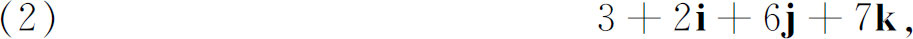
其中i，j，k起着i在复数中所起的作用。实数部分（如上面的3）称为四元数的数量部分，而其余是向量部分。向量部分的三个系数是点P的笛卡儿直角坐标，而i，j，k是定性的单元，几何上其方向是沿着三根坐标轴。两个四元数相等的准则是，它们的数量部分相等以及它们的i，j，k单元的系数分别相等。两个四元数相加是将它们的数量部分相加，且将i，j，k单元的每个系数相加，以形成这些单元的新系数。于是两个四元数的和本身也是四元数。
四元数进行乘法运算时，乘法的所有熟知的代数规则都假定有效，除了在形成单元i，j，k的积时，放弃了交换律，而具备下列规则：
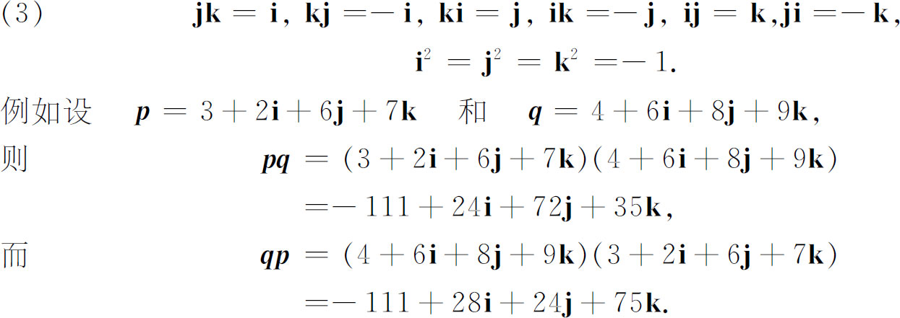
哈密顿证明了乘法是可结合的，这是第一次使用这个术语(11)。
四元数被另一四元数除也能实现，但乘法不交换蕴含了用四元数q除四元数p，可以意味着找r使p＝qr或p＝rq。这个商r在这两种情况下不必相同。除法的问题最好通过引进q-1或1/q来处理。设
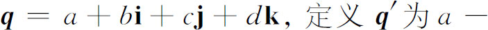
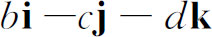
，并定义N（q）（称为q的模）为a2＋b2＋c2＋d2。于是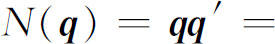
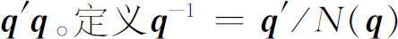
，因而如N（q）≠0，则q-1存在．还有qq-1＝1和q-1q＝1，现在要找r使p＝qr，我们就有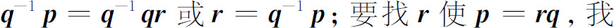
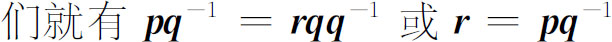
。立刻能表明哪个四元数能用来旋转、伸长或缩短一个给定的向量成另一个给定的向量。我们仅需证明，能确定a，b，c和d使
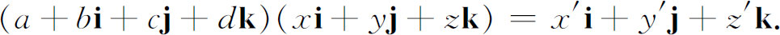
把左边乘开成四元数并使左右两边对应系数相等，就得到未知数a，b，c和d的四个方程。这四个方程足以确定未知数。
哈密顿还引进了一个重要的微分算子。符号，它是Δ的倒转———哈密顿称它为“nabla”，因为它像古代一个同名的希伯来乐器———代表算子
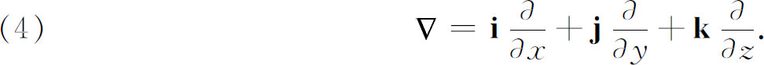
当应用于数量点函数u（x，y，z）时，它产生向量
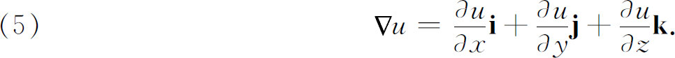
这个向量是随着空向的点而变化的，现在称为u的梯度。它代表u的最大的空间增长率的大小和方向。
还令
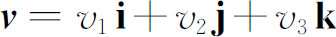
表示一个连续的向量点函数，这里v1，v2，v3是x，y，z的函数，哈密顿引进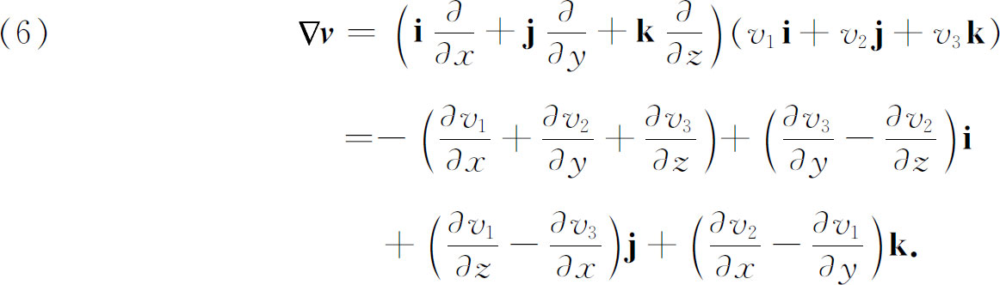
于是把作用到向量点函数v上的结果是产生一个四元数；这四元数的数量部分（除去负号）我们现在称它为v的散度，而向量部分称为v的旋度。
哈密顿对他的四元数具有无限的热情。他相信这个创造和微积分同等重要，将会是数学物理中的关键工具。他自己对几何、光学和力学作了一些应用。他的思想得到了他的朋友泰特（Peter Guthrie Tait，1831—1901）的热情支持。泰特是皇后学院的数学教授，后来又是爱丁堡大学的自然历史教授。泰特在很多文章中鼓励物理学家采用四元数作为基本工具。他甚至卷入了同凯莱的长期争论中，凯莱对四元数的用途取消极观点。但物理学家们无视四元数而继续使用方便的笛卡儿坐标来工作。然而，正如我们将看到的，哈密顿的工作确实间接地引向一个向量代数和向量分析，这都是物理学家们渴望采用的。
哈密顿的四元数证明对代数学具有不可估量的重要性。一旦数学家们体会到可以构造一个有意义的、有用的“数”系，它可以不具有实数和复数的交换性，那他们就觉得可较为自由地考虑甚至更偏离实数和复数的通常的性质的创造。这个体会在向量代数和向量分析建立之前是必要的，因为向量比四元数违反更多的通常的代数法则（第5节）。更一般地，哈密顿的工作引向线性结合代数的理论（第6节）。哈密顿本人开始研究包含n个分量或n元数组的超复数(12)，但是正是他的关于四元数的工作推动了线性代数的这个新研究。